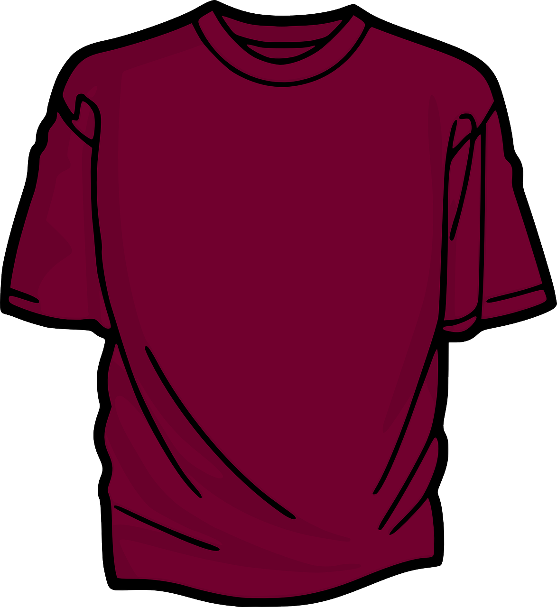

Problem
Rashid has decided to make clothing decisions easy for himself in the morning. He has kept 3 shirts, 2 pairs of pants, and 2 pairs of socks. They are as follows:
Shirts: light blue shirt, dark blue shirt, and burgundy shirt

Pants: blue jeans, burgundy pants
Socks: blue socks, red socks
Note that Rashid always wears two socks that are the same colour.
How many possible different outfits could Rashid wear?
How many of the outfits from part A contain all blue items?
What fraction of the total possible outfits contain all blue items?
What fraction of the total possible outfits contain at least one burgundy item?
Solution
One way to solve this problem is to create a tree that shows all possible combinations of shirts, pants, and socks that Rashid can wear.
Here is tree showing those combinations:
From this diagram we can identify each possible outfit by following a path from “Outfits” to a particular pair of socks.
For example, one outfit is: light blue shirt/blue jeans/blue socks
Another outfit would be: dark blue shirt/burgundy pants/red socksFrom the tree we can see that there are 12 different outfits Rashid can wear.
We can also calculate the number of outfits without listing all possibilities. Rashid has 3 choices for a shirt, and for each of the 3 choices of a shirt he has 2 choices for pants, and for each shirt/pants combination he has 2 choices for socks. So he has a total of \(3 \times 2 \times 2 = 12\) different outfits he can put together.
There are two combinations that include all blue items:
light blue shirt/blue jeans/blue socks
dark blue shirt/blue jeans/blue socksSince there are 12 different outfits and 2 of them contain all blue items, \(\tfrac{2}{12}\), or equivalently \(\tfrac{1}{6}\), of the total outfits contain all blue items.
All 4 of the combinations that have a burgundy shirt will include something burgundy. As well, half of the combinations that have a light blue shirt will have burgundy pants, so 2 of these outfits include something burgundy. Similarly, there are 2 outfits that will have a dark blue shirt that include something burgundy.
This is a total of \(4+2+2=8\) outfits that will include a burgundy item.
This means that \(\tfrac{8}{12}\), or equivalently \(\tfrac{2}{3}\), of the total outfits include at least one burgundy item.
Teacher’s Notes
This problem asks for the number of different outfits Rashid could wear. Mathematically, this is asking to find a number of combinations. Assuming that the items are unique, we can easily calculate the total number of combinations by multiplying together the number of options available for each part of the whole. For example, in this problem there are 3 options for shirts, 2 options for pants, and 2 options for socks. So the total number of outfit combinations is:
\[3 \times 2 \times 2 = 12\]
In this type of problem, the order of the combination does not matter. An outfit described as “light blue shirt, blue jeans, and red socks” is the same outfit as “blue jeans, red socks, and light blue shirt”.
Where order does matter, mathematically we refer to these types of arrangements as permutations. For example, if we have a shirt, pants, and a pair of socks, and we want to put them beside each other on the table, the order we arrange them is an example of a permutation. In this case, “light blue shirt, blue jeans, and red socks” is a different arrangement than “blue jeans, red socks, and light blue shirt”. If the items are unique, we can calculate the number of permutations by thinking about how many options we have for each position in the arrangement.
In this example,
We have 3 choices for the leftmost position: the light blue shirt, the blue jeans, or the red socks.
After selecting one of the options, now we are left with 2 choices for the middle position.
Now there is only 1 option left for the rightmost position.
Now we multiply together the number of choices for each position to find the total number of arrangements. So the number of permutations of these items of clothing is:
\[3 \times 2 \times 1 = 6\]